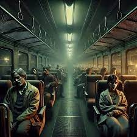

El Autobús de las 4:20

La historia dice que si esperas transporte a las 4:20 a. m., aparece un autobús sin número ni ruta.
El chofer siempre sonríe demasiado.
Los pasajeros no hablan, no se mueven.
Una chica aseguró que subió una vez.
Nadie respiraba.
Nadie parpadeaba.
Y luego, desde un rincón oscuro, una voz idéntica a la mía dijo:
Cuando quiso bajar, el chofer dijo:
—Todavía no es tu parada.
La chica nunca más tomó transporte de madrugada.
Dice que cuando bajó, el bus desapareció como si se hubiera disuelto en el aire.